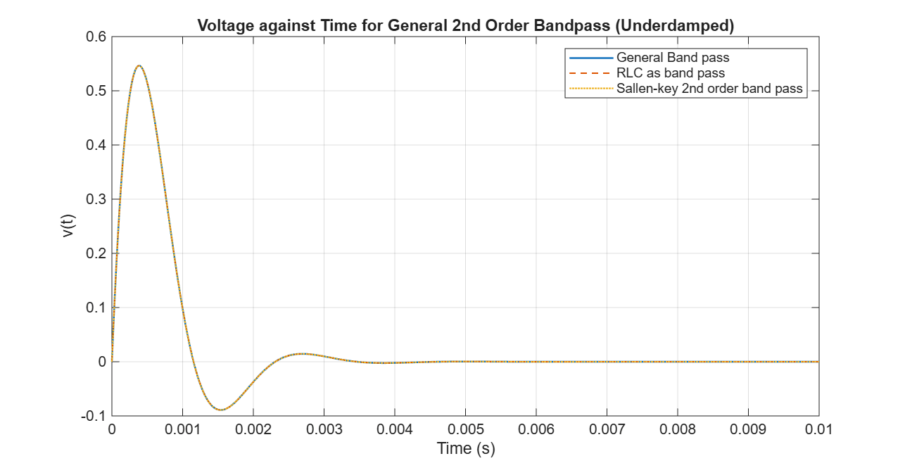
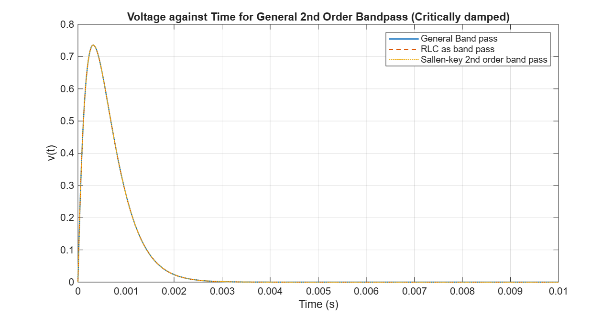
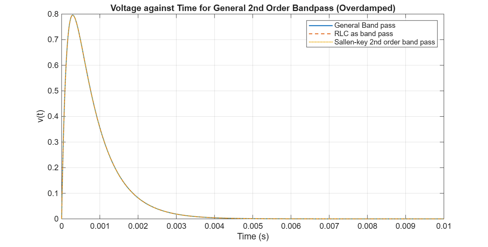

Our Results
Theory
A filter is a device that passes electric signals at certain frequencies or frequency ranges while preventing the passage of others. Filters can be classified primarily as low-pass, high-pass, or band-pass filters. Low-pass filters pass signals with frequencies lower than a certain cutoff frequency and weaken signals with frequencies higher than the cutoff frequency. High-pass filters pass signals with frequencies higher than a certain cutoff frequency and weaken signals with frequencies lower than the cutoff frequency. Band-pass filters pass signals within a certain frequency range and weaken signals outside that range.
High-frequency band-pass filters (several hundred MHz) are used for channel selection in telephone central offices, as well as in radio and television tuners. For this research, the focus will be on these types of filters to tally with earlier explanations of RLC Series circuits in radios.
At high frequencies (> 1 MHz), all of these filters usually consist of passive components such as inductors (L), resistors (R), and capacitors (C). They are then called LRC filters. In the lower frequency range (1 Hz to 1 MHz), however, the inductor value becomes very large and the inductor itself gets quite bulky, making economical production difficult.
In these cases, active filters become important. Active filters are circuits that use an operational amplifier (op amp) as the active device in combination with some resistors and capacitors to provide an LRC-like filter performance at low frequencies.
For this analysis, transfer functions in the Laplace s domain will be used instead of the usual response-time model to compare, since solving the model in the traditional frequency-time domain yields complex integro-differential models.
General formula for a transfer function
$$H(s) = \frac{V_{out}}{V_{in}}$$The standard second-order bandpass transfer function being used is
The Sallen-Key band-pass circuit has the following transfer function:
Finally, the transfer function for a standard RLC series circuit, configured as band pass is given as:
where
Results
The graphs below show a comparison of the step responses, derived from the transfer functions for the standard band pass, RLC series and Sallen key topology circuits, for all three damping conditions. It can be deduced from all three plots that though the RLC and sallen key topologies have totally different component configurations, the step response from both are identical when made to fit the general case.
It is to be noted that a unity gain opamp (Gain is 1) was used for the Sallen-key to ensure the step response was identical to the others.

Figure 1: Underdamped Case

Figure 2: Critically Damped Case

Figure 3: Overdamped Case
Step Responses for Standard Band Pass circuit, RLC Series Circuit and Sallen-key topology band-pass circuits for the three damping conditions